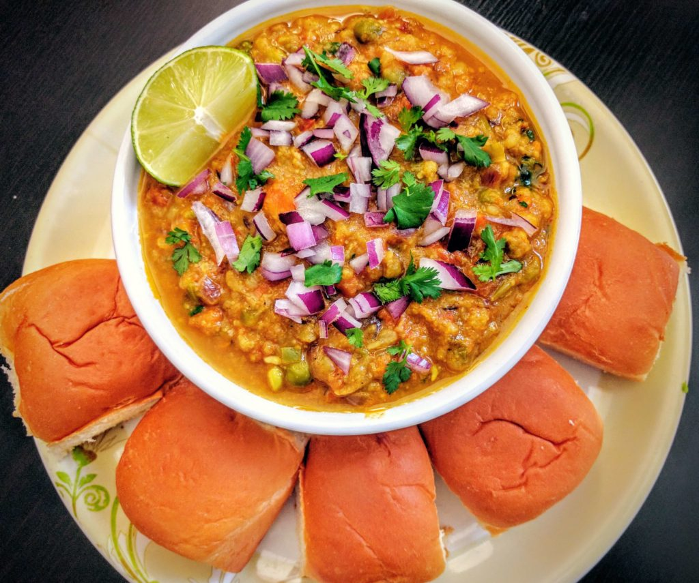
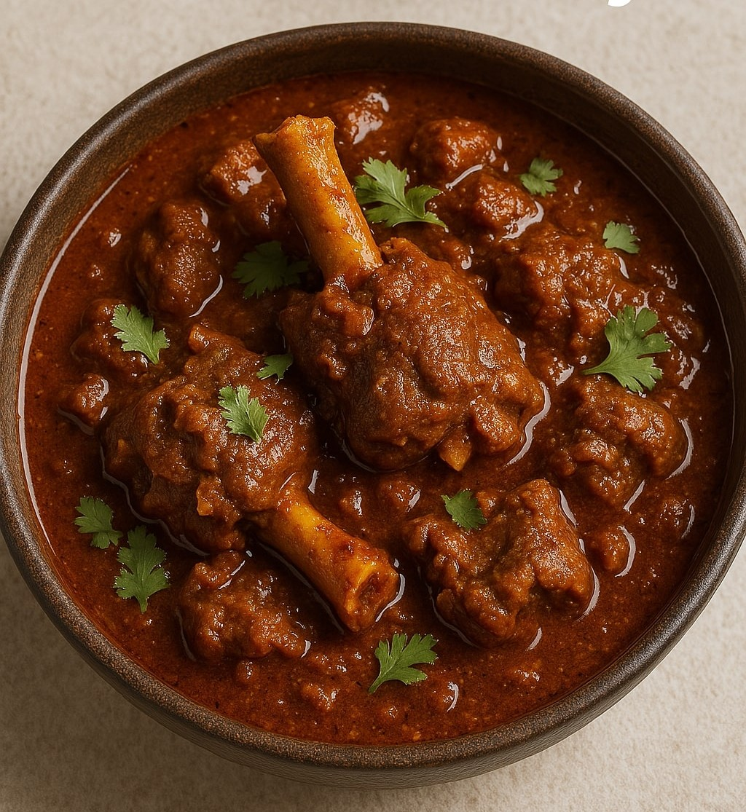

Classic Pav Bhaji
A delicious medley of mashed vegetables and spices, served with soft, buttery pav. A Mumbai street food classic.
View Recipe
Spicy Shev Bhaji
A spicy and savory curry made with gram flour noodles (sev) in a traditional Maharashtrian gravy.
View Recipe
Aromatic Biryani
A fragrant and flavorful rice dish with layers of marinated meat or vegetables, spices, and herbs.
View Recipe
Vegetable Pulav
A simple, one-pot rice dish made with mixed vegetables, whole spices, and fragrant basmati rice.
View Recipe
Authentic Misal Pav
A popular Maharashtrian dish consisting of a spicy curry of sprouts, topped with farsan, onions, and lemon.
View Recipe

Mutton Bhaji
A spicy, rustic Maharashtrian-style mutton curry, slow-cooked with aromatic spices and fresh herbs. Perfect with bhakri or rice.
View Recipe